A bed that looks flat usually isn't missing expensive bedding, it's missing technique.
Volume, texture, and structure are what actually separate a hotel-style bed from an ordinary one, more than the thread count ever does.
A bed that looks deliberately a little undone, with real height and softness, reads as luxurious in a way a perfectly flat, tightly tucked one never does.
These techniques cover how to actually get there.

Why Most Beds Don't Look Fluffy
There's a psychological reason this all works.
Softness reads as comfort before anyone even touches the bed. Height reads as luxury, a flat bed looks functional, a tall one looks indulgent. And visual warmth, through color and texture, does real emotional work beyond the literal temperature of the room.
The most common mistakes all come from misunderstanding this: overstuffing without any real structure, using cheap inserts that won't hold loft, and ignoring proportion between pillow sizes and the bed itself.
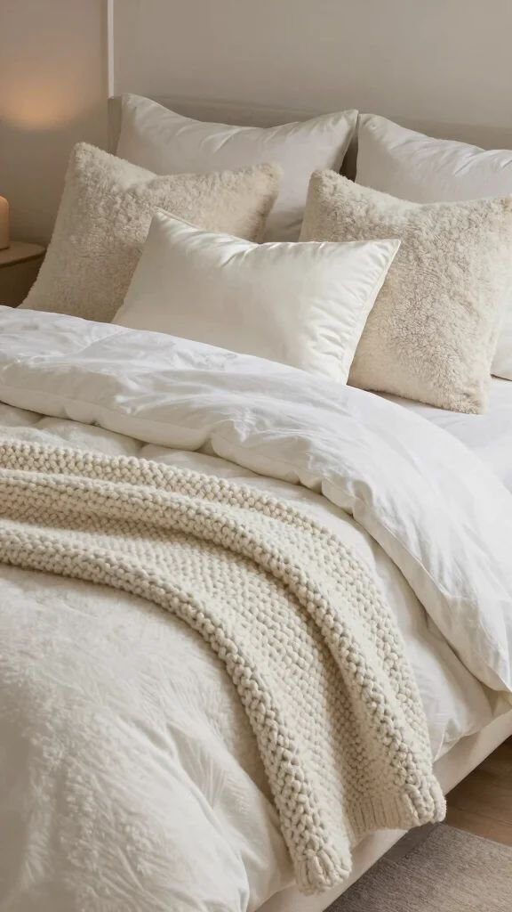
Down Alternative Comforter, Queen, Fluffy All Season Duvet Insert
Shop on Amazon
Flat or worn-out bedding is the most common culprit behind all of it, an insert that's lost its loft can't create volume no matter how it's arranged.
Poor layering is a close second. A single flat duvet with no additional texture reads as thin even when it's genuinely warm.
Ignoring pillow styling rounds out the list, one flat pillow per sleeper looks functional, not styled.
Fluffiness comes down to three things working together: volume, texture, and structure. Miss any one, and the other two can't fully compensate.
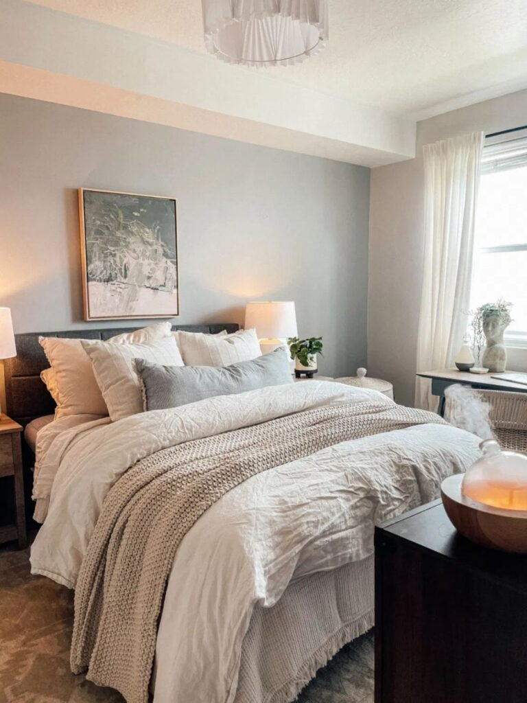
1. Stop Tucking Everything In Tightly
A tightly tucked duvet looks neat, but neat and fluffy aren't the same thing.
Leaving the duvet loose, with a bit of natural draping over the sides, creates the volume a tight tuck flattens out.
The slightly undone look reads as more luxurious, not less put-together, once the rest of the styling is right.
This is a small adjustment with a real visual payoff, often the last piece that makes everything else on this list click into place.
2. Stick to Soft, Neutral Colors
Cream, soft gray, warm beige, and muted blush all read as calm and luxurious in a way busier patterns and saturated colors don't.
A neutral palette also makes texture, not color, do most of the visual work, which is exactly where the fluffy, layered look actually lives.
This doesn't mean avoiding color entirely, just keeping it secondary to texture and volume.
A calm palette is what lets the layering and texture techniques elsewhere on this list actually stand out.
3. Add a Chunky Throw Blanket
A folded or draped throw at the foot of the bed is one of the fastest upgrades on this entire list.
Chunky knits add instant texture without needing to change the rest of the bedding at all.
Folding it in thirds and draping it loosely, rather than laying it perfectly flat, reads as more natural and lived-in.
A small, inexpensive addition with a genuinely outsized visual return.
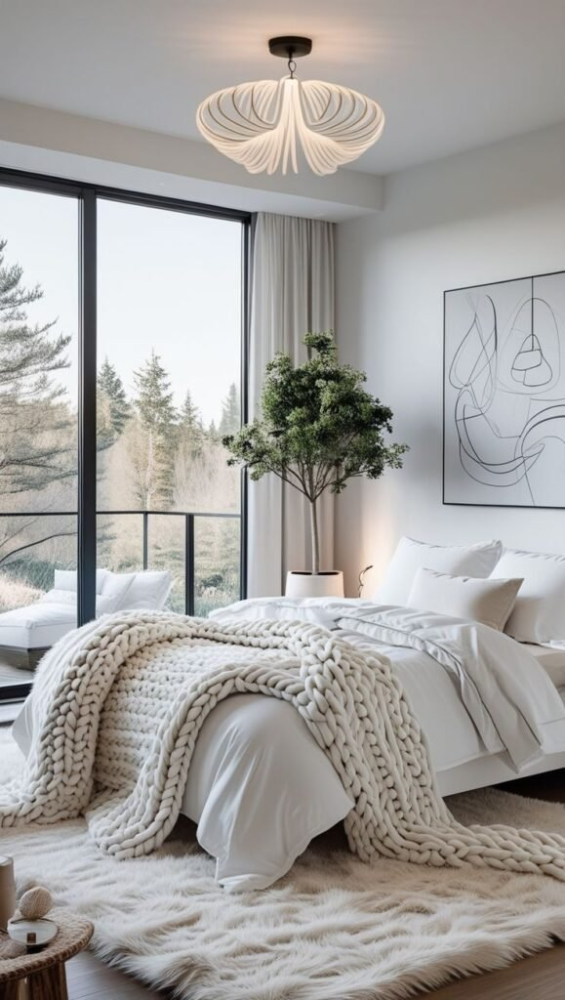
4. Choose Fabrics That Actually Support the Look
Linen, cotton percale, and a plush velvet accent all hold their shape and texture better than slippery, cheap synthetic blends.
A fabric that looks great folded in a store but goes limp once it's on a bed won't support any of the other techniques here.
Mixing one textured fabric, velvet, bouclé, chunky knit, with simpler cotton or linen adds contrast without overcomplicating the palette.
Fabric choice is foundational, it affects how well every other technique on this list actually shows up.
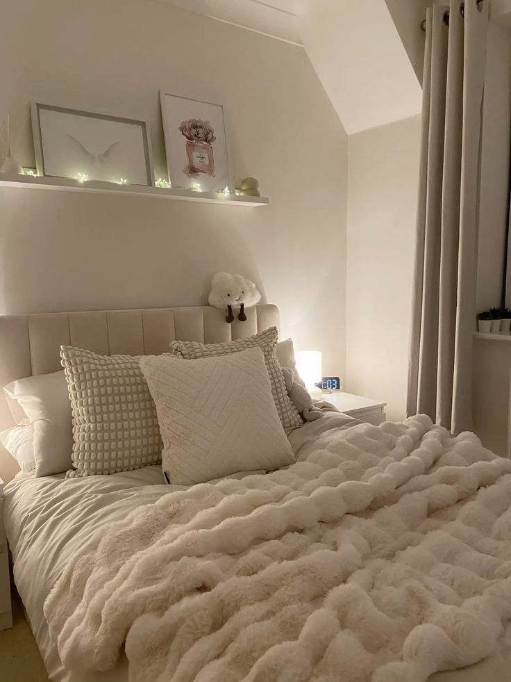
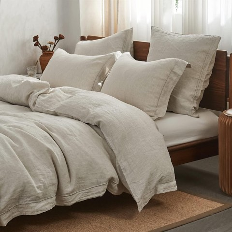
Simple and Opulence 100% French Flax Linen Duvet Cover Set, Embroidered, 3 Pieces
Shop on AmazonGlory Season Velvet Throw Pillow Cover, Soft Solid Square Cushion Case
Shop on Amazon5. Fluff the Pillows Daily
Pillows compress overnight, and skipping the daily reset is why a bed that looked great yesterday looks flat again today.
A quick fluff and reshape takes ten seconds and resets the whole look.
This is the lowest-effort, highest-frequency habit on this entire list, more about maintenance than any single purchase.
Skipping it is the fastest way to undo every other technique here.
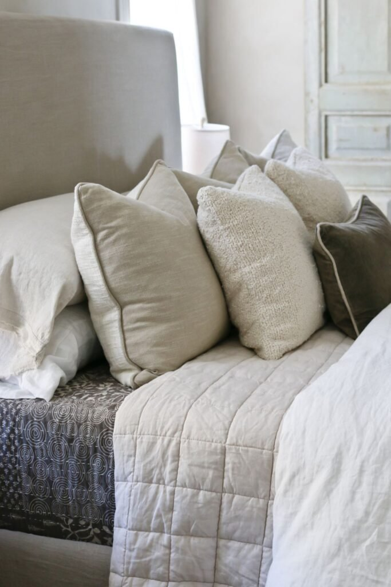
AllerEase Premier Zippered Pillow Protectors, Standard Queen, 4 Pack
Shop on Amazon6. Mix Pillow Sizes, Not Just One Type
A row of identical pillows looks tidy but flat.
Euro shams in back, standard pillows in front, and a smaller accent pillow or two up top creates the height and variation that actually reads as fluffy.
This formula works regardless of exact pillow count, the size variation is what matters, not the total number.
A bed with mixed pillow sizes looks considered even before anyone notices the bedding itself.

7. Layer the Bedding Deliberately
A flat sheet, a duvet, and a folded throw or coverlet at the foot of the bed each add a different kind of visual depth.
The layering doesn't need to be heavy, even two or three thin layers read as more intentional than one thick one.
Balance matters here. Too many layers starts to look cluttered rather than cozy.
This is what turns a bed from "made" into "styled."
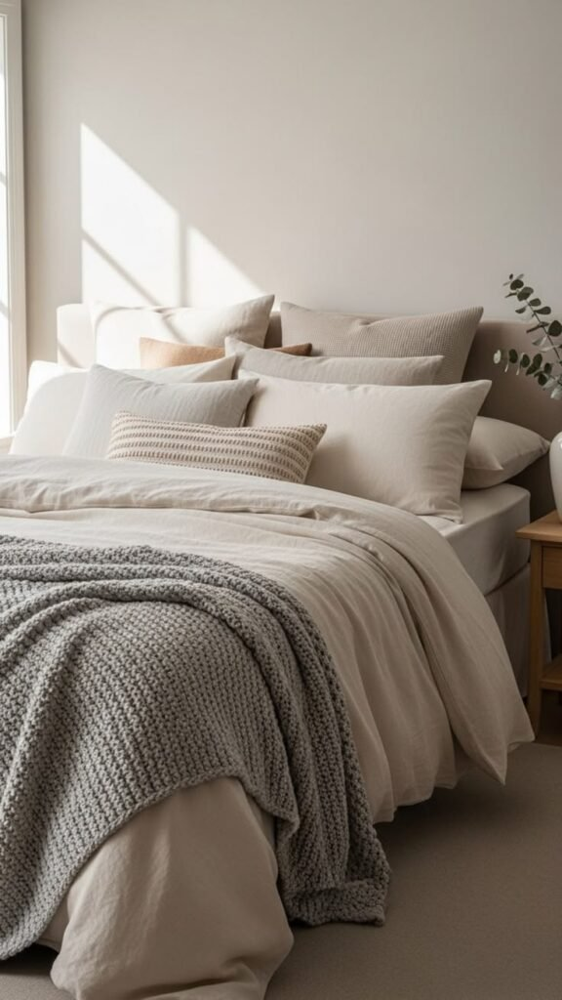
8. Start With a Genuinely Good Duvet Insert
This is the single highest-impact change on this entire list.
A high-fill-power insert holds its loft and actually creates volume, where a cheap, flat insert simply can't, regardless of how it's styled on top.
Down or a quality down-alternative both work, as long as the fill power is high enough to create real height.
Everything else on this list works better once this one piece is right.
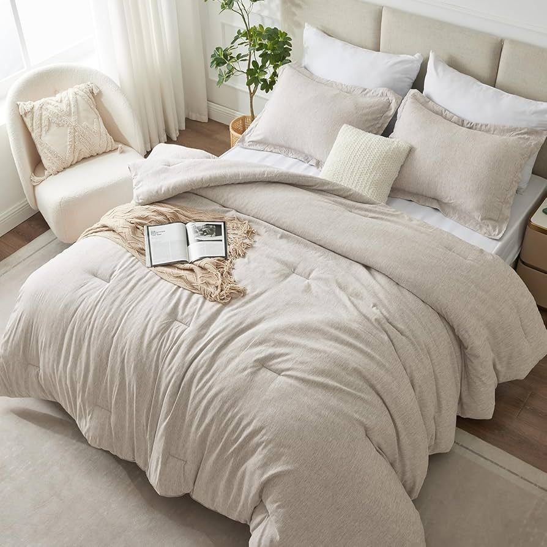
Serta Goose Feather Down Fiber Comforter, Queen, 100% Cotton Cover
Shop on AmazonLuxury White Goose Feather Down Fiber Comforter, Queen Duvet Insert
Shop on AmazonGetting There Without Buying Anything New
Most of this comes down to technique, not purchases, fluffing, loose draping, and rearranging what's already there covers a surprising amount of ground.
A five-minute reset, fluffing pillows, loosening the tuck, refolding the throw, refreshes an existing bed without spending anything.
Worth trying this before assuming new bedding is required at all.
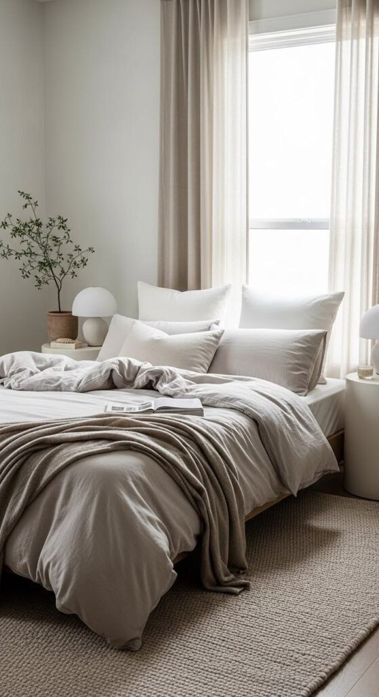
Making It Work in a Small Bedroom
Controlling bulk matters more here than anywhere else, oversized pillows and heavy layering can overwhelm a smaller room.
Scaling down pillow count and throw size, while keeping the same layering and loose-tucking techniques, still delivers the look without crowding the space.
A smaller bed can absolutely still look fluffy. It just needs a lighter hand.
Adjusting the Look by Season
Heavier knits, flannel, and an extra throw layer bring the same techniques into winter without losing any of the volume.
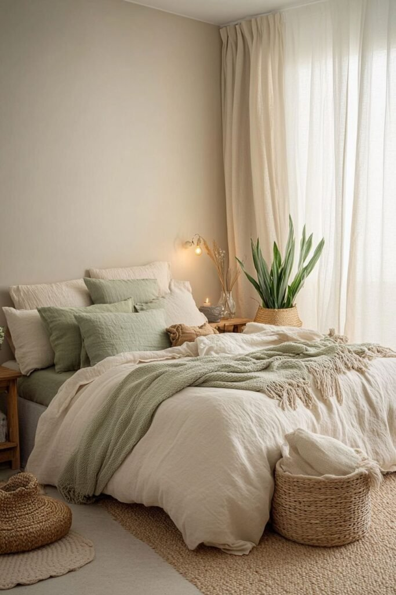
A lighter linen duvet and fewer, breathable layers keep the same fluffy look going through warmer months without the extra heat.
MooMee Washed Cotton Linen Look Duvet Cover Set, King
Shop on AmazonBare Home Flannel Duvet Cover Set, Queen, Glencoe Tartan Plaid
Shop on AmazonThree Small Tricks That Make a Real Difference
Letting the duvet overspill slightly past the edges of the mattress, rather than tucking it in precisely, adds volume exactly where a tight edge would otherwise flatten it.
A quick karate-chop crease down the center of each pillow adds a hotel-style detail that takes seconds.
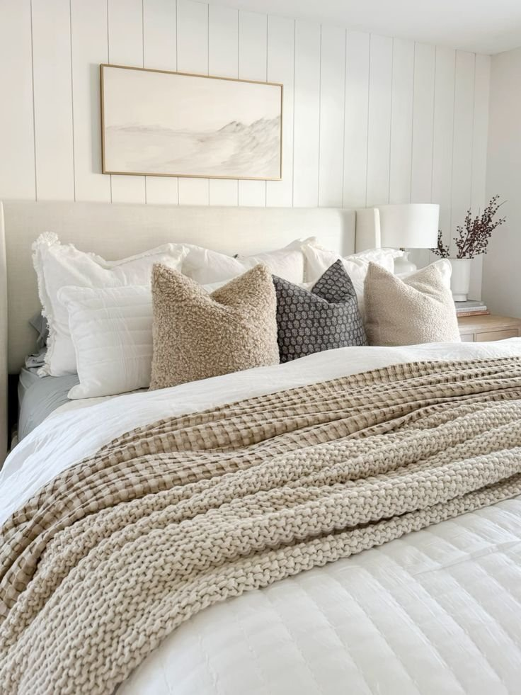
FRESH IDEAS Comforter Clips for Duvet Covers, 4 Pack
Shop on AmazonS and T INC Reusable Plastic Dryer Balls, 6 Pack, Mint Blue
Shop on AmazonFolding back the top layer of the duvet at a slight angle, rather than leaving it flat, adds an easy bit of dimension right where it's most visible.
Homiest White Euro Sham Covers, 26 x 26 Inch, Set of 2, Wide Flange
Shop on AmazonMUXHOMO 3-Piece Floral Green Duvet Cover Set, Queen
Shop on AmazonGetting the Look Without the Full Budget
A single higher-quality duvet insert, paired with budget-friendly shams and a thrifted throw, delivers most of the visual effect without the full splurge.
Spending selectively on the one piece that matters most, the insert, and saving on the rest is a smarter strategy than spreading a budget thin across everything.
A smart swap or two consistently beats a complete bedding overhaul on a tight budget.
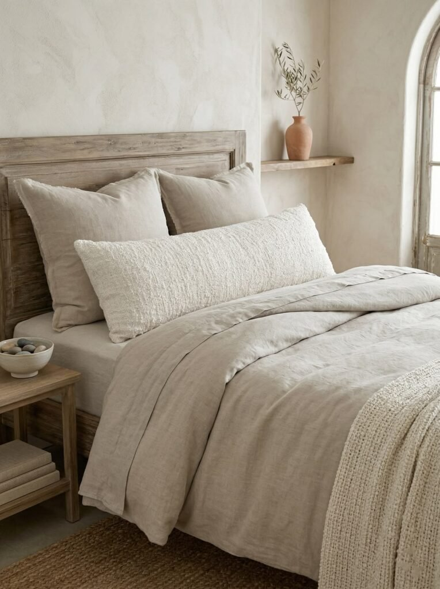
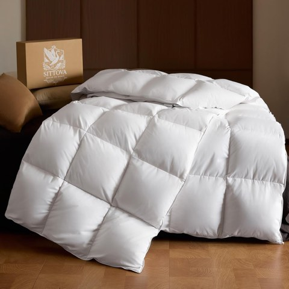
Goose Down Fiber Comforter, Twin, Summer Weight Hotel Quality Duvet Insert
Shop on AmazonStyling Like a Designer, Without Overthinking It
A slightly imperfect, "structured mess" look consistently reads better than a perfectly symmetrical one.
A pillow turned at a slight angle, a throw draped rather than folded flat, small imperfections are what make a bed look lived-in rather than staged for a photo.
A completely flawless bed can actually read as a little stiff or try-hard once it's styled, which is worth keeping in mind before over-correcting every small detail.
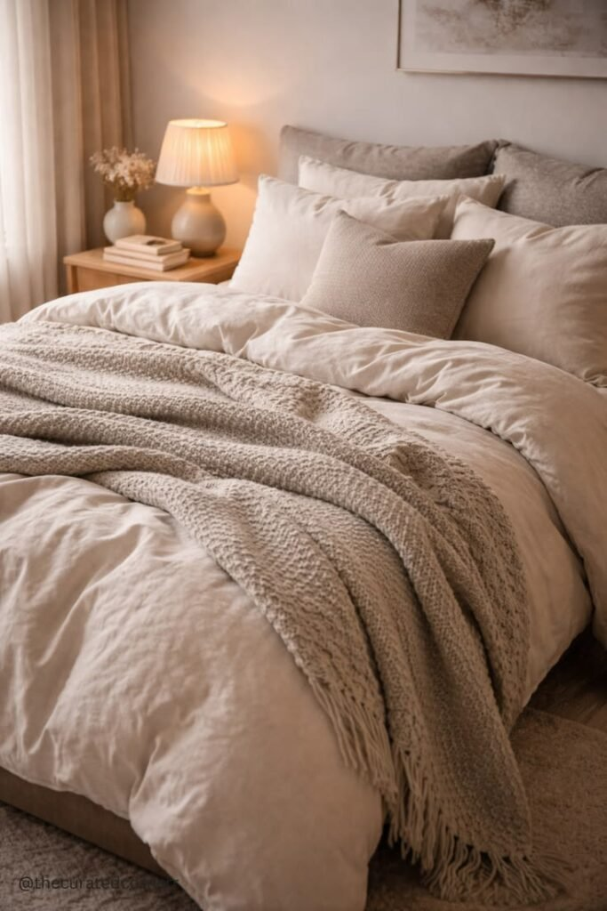
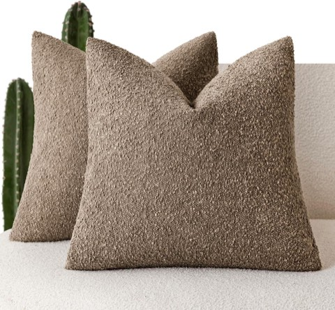
Foindtower Textured Boucle Throw Pillow Covers, 20 x 20 Inch, Light Brown
Shop on AmazonThe One Thing People Get Wrong
More isn't automatically better. A bed overloaded with pillows and layers can tip from fluffy into cluttered just as easily as a flat bed misses the mark entirely.
The actual goal is volume with intention, not maximum quantity.
Every technique on this list works toward that same balance.
Final Thoughts
None of this requires a full bedding overhaul to try.
Start with the duvet insert, since it's the foundation everything else builds on, then layer in the smaller techniques over time.
A loosely tucked, slightly imperfect bed with real volume will read as more luxurious than a perfectly flat, tightly made one every time.
The difference is mostly technique, not budget.
Give the bed five minutes of attention tomorrow morning and see how much changes before buying a single new thing.